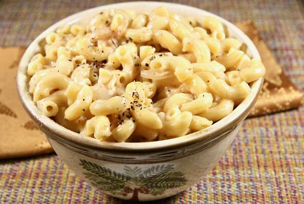

Mac and cheese

An upscale mac and cheese! Don't skimp on the cheese! It makes the mac and cheese taste amazing!
ingredients
- 4 tablespoons unsalted butter, divided
- 2 large onions, very thinly sliced
- 1 teaspoon dried thyme
- 1 bay leaf
- 1 pinch salt and ground black pepper to taste
- 1 (16 ounce) package elbow macaroni
- 2 tablespoons all-purpose flour
- 1 cup beef broth
- 1 cup milk
- 1 pinch freshly grated nutmeg, or to taste
- ¾ pound shredded Gruyere cheese
Steps
- Melt 2 tablespoons butter in a large skillet over medium-high heat.
Cook and stir onions, thyme, and bay leaf in the butter for 5 minutes;
season with salt and pepper. Reduce the heat to medium-low and cook until onions are browned, 10 to 15 minutes.
Transfer to a plate and discard the bay leaf. Reserve the skillet.
- Bring a large pot of lightly salted water to a boil.
Cook elbow macaroni in the boiling water, stirring occasionally,
until tender yet firm to the bite, about 8 minutes.
- Meanwhile, melt remaining butter in the reserved skillet over medium heat.
Whisk in flour for 1 minute, then whisk in beef broth and milk and bring to a boil;
season with nutmeg, salt, and pepper. Reduce heat and cook until thickened, about 5 minutes.
Stir in Gruyere cheese until melted.
- Drain macaroni and toss with onion and sauce until well combined.